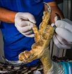

<!DOCTYPE html>
<html lang="en"></html>
<head>
    <title>Home</title>
    <meta charset="UTF-8">
    <meta name="viewport" content="width=device-width, initial-scale=1.0">
    <link rel="stylesheet" href="index.css">
    <!--<link rel="stylesheet" href="./css/bootstrap.css">-->
    <style>
    
    </style>
</head>
<script src="./bootstrap-5.3.3-dist/js/bootstrap.bundle.js"></script>
<body class="prevent-select">
<div class="container">

    

    <div id="search">
        <form action="self">
            <label for="gsearch"></label>
            <input type="search" id="" name="" placeholder="Search In page...">
            <input type="submit" value="Search">
        </form>
    </div>
    
    <a href="top"></a>
    <div id="nav" class="btn-grup">
        <div class="dropdown">
            <button class="button dropdown">Menu</button>
            <div class="dropdown-content">
                <a href="#">About</a>
                <a href="#">Services</a>
                <a href="#">Clients</a>
                <a href="#">Contact</a>
            </div>
        </div>
            <button class="button">Home</button>
            <button class="button">Services</button>
            <button class="button">About</button>
            <button class="button">Contact</button>
            <button class="button"><a href="loginPage.html" title="Go on to login" target="loginPage.html">LoginPage</a></button>
            <button class="button"><a href="Q&A.html" title="Questio & Answer Section" target="Q&A.html">Q & A</a></button>
    </div>
    
    <div id="main">

    <div id="content">
    <div id="feature">
    <h1 class="first" id="h1controls">Are you in love with Eagles?</h1>
    <p>The eagle is considered the most dangerous and leathal wild animal in the bird family.
        It has very large pair of wings that can stretch upto a total length of 2 meters for a fully developed one. A fully grown eagle can weigh 
        upto a mass of 105kgs. Eagles have a very sharp, curved and strong beak and very strong and sharp claws. As a lover of eagles you ought to 
        be aware that Eagles are carnivores and hence feed on meat. </p>
    <P>This is why Eagles characterise with sharp claws and strong beaks. They are often the best hunter and killer birds in history. Researchers 
        say that a fully grown eagle can take down an adult antelop and consume it for food, hence their leathal nature. Eagles' most favorite food
        though is a snake.</P>
    <p>Personally I like the scene of how an Eagle takes earth on a snake. The Eagle grabs the snake by its tail and takes off high above the skys 
        where it has more power, in the air, and instantly kills the snake with it's sharp claws. After it has made sure that the snake is dead, 
        it mounts down to the earth surface and comfortably consumes it for food. <blockquote>"In the third month, the sun rising, the Boak and the  
        Leopard on the fields of Mars to fight; The tired Leopard raises it's eye to the heavens, sees an Eagle playing around the sun" -Nostradamus</blockquote>
        Considering this qoute, you can visualise how an Eagle is persived by other creatures across the continent including mankind. </p>
    <p>There eixts a very wide variety of Eagles in the world. We could take a look at that in our next page. Eagles undergo different phases of 
        life cycles and can live upto 200 years and die of old age eventually. As an Eagle outgrows its every phase of life it shades away its beaks by continously 
        hitting on a rock surface. The tallons also ware off during this period. It is almost impossible to observe this process since at this stage of
        it's life cycle an Eagle singles out itself from the normal world and burries itself deep into the wild almost inaccessible to mankind. The photo 
        on the right side of the page shows the tallons of a fully grown Eagle. Yes, Eagles have tallons twice as large as the human hand hence oroof that it can 
        take down an adult antelop or even worse cases of huge animals because it has abilities beyond measurable scales as a bird and even as a wild animal generally.
        </p>
    </div>
    <div class="article column1">
    <p>The paragraph is consistent in every page you and it was used for illustrationand practice puprposes.
        The paragraph is consistent in every page you and it was used for illustrationand practice puprposes.
        The paragraph is consistent in every page you and it was used for illustrationand practice puprposes.
        The paragraph is consistent in every page you and it was used for illustrationand practice puprposes.
        The paragraph is consistent in every page you and it was used for illustrationand practice puprposes.</p>
    </div>
    <div class="article column2">
    <p>The paragraph is consistent in every page you and it was used for illustrationand practice puprposes.
        The paragraph is consistent in every page you and it was used for illustrationand practice puprposes.</p>
    </div>
    <div class="article column3">
    <p>The paragraph is consistent in every page you and it was used for illustrationand practice puprposes.
        The paragraph is consistent in every page you and it was used for illustrationand practice puprposes.</p>
    </div>
    <div class="article column4">
        <p>The paragraph is consistent in every page you and it was used for illustrationand practice puprposes.
            The paragraph is consistent in every page you and it was used for illustrationand practice puprposes.</p>
    </div>
    <div class="article column2">
        <p>The paragraph is consistent in every page you and it was used for illustrationand practice puprposes.
            The paragraph is consistent in every page you and it was used for illustrationand practice puprposes.</p>
    </div>
    
</div>
</div>
<i class="bi bi-arrow-up-circle-fill"></i>
    <a href="#top"><svg xmlns="http://www.w3.org/2000/svg" width="30" height="30" fill="currentColor" class="bi bi-arrow-up-circle-fill" viewBox="0 0 16 16">
        <path d="M16 8A8 8 0 1 0 0 8a8 8 0 0 0 16 0m-7.5 3.5a.5.5 0 0 1-1 0V5.707L5.354 7.854a.5.5 0 1 1-.708-.708l3-3a.5.5 0 0 1 .708 0l3 3a.5.5 0 0 1-.708.708L8.5 5.707z"/>
    </svg></a>
    <div id="footer">
    <p>&copy; Copyright Group 7 2024</p>
    </div>
</div>
<script>
    // When the user clicks on the password field, show the message box
myInput.onfocus = function() {
  document.getElementById("message").style.display = "block";
}

// When the user clicks outside of the password field, hide the message box
myInput.onblur = function() {
  document.getElementById("message").style.display = "none";
}
    </script>
</body>
</html>